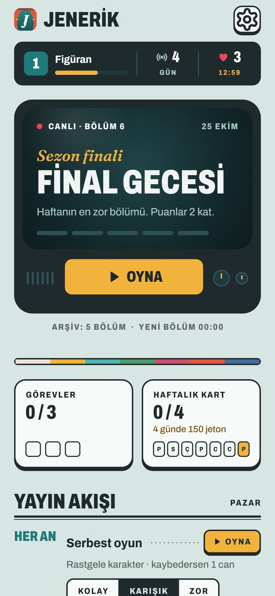
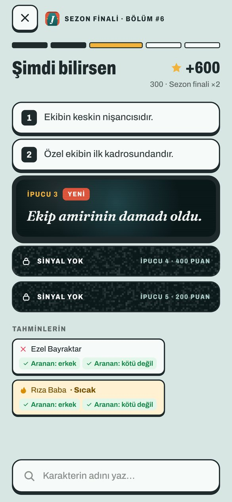
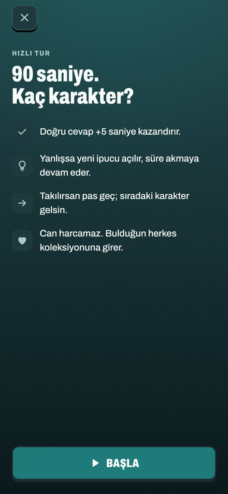

Canlı · Her gün yeni bölüm
Dizi tahmin oyunu
Karakteri
ipuçlarından bul
Her gün herkes aynı dizi karakterini arar. İlk ipucu açılır, her yanlış tahmin yenisini getirir. Ne kadar erken bulursan o kadar çok puan.



Yayın akışı
- Her günGünün bölümüHerkes aynı karakteri arar. Pazar günleri zorlu Sezon Finali, puanlar 2 kat.
- Her anSerbest oyunİstediğin kadar karakter. Üst üste bildikçe puanın büyür.
- 90 snHızlı TurSüre bitmeden kaç karakter bulabilirsin?
- 5 sahneHangi Sahne?Ünlü anları kendi sözlerimizle anlatıyoruz, kahramanını sen bul.
- GeceSorgu OdasıEvet/hayır soruları sor, şüphelileri ele, suçluyu bul.
Hesap yok
Kayıt olmadan oynarsın. İlerlemen yalnızca telefonunda saklanır, bize gönderilmez.
Destek
Bir sorun mu var, bir öneri mi? Bize yaz: rahatollapp@hotmail.com
Jenerik bağımsız bir hayran oyunudur; dizilerin yapımcıları ve yayıncı kanallarıyla bir bağlantısı yoktur. Dizi ve karakter adları sahiplerine aittir. İpuçları ve sahne anlatımları bize aittir; dizilerden metin, görsel ya da müzik kullanılmaz.